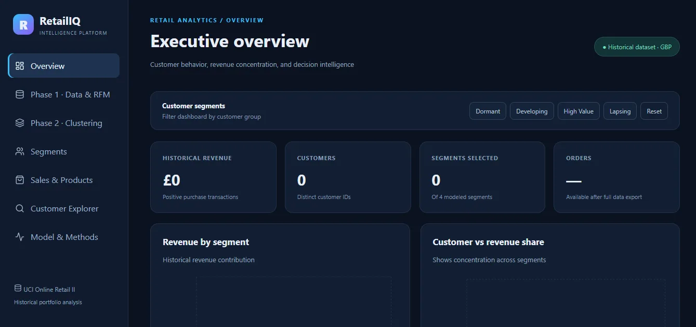

RetailIQ: Retail Customer Analytics
An executive dashboard for customer behavior and revenue concentration, built on the UCI Online Retail II dataset. It walks through RFM feature engineering and clustering to split customers into four segments (Dormant, Developing, High Value and Lapsing), then lets you filter revenue, customer share and sales by segment and look up individual customers.
Data & RFM · Clustering · Dashboard